날짜+시간
DATETIME · 날짜 칸과 시간 칸으로 받는 일시 입력란
날짜+시간 필드란
- 1.1필드 추가와 속성 패널 구성
1.1필드 추가와 속성 패널 구성
개요
날짜+시간(DATETIME) 은 날짜와 시각을 함께 기록하는 입력란입니다. 검체 채취 일시 · 투여 시각 · 이상사례 발생 시각처럼 몇 시 몇 분인지가 중요한 항목에 사용합니다. 입력란이 날짜 칸과 시간 칸 두 개로 나뉘어 있는 것이 날짜 타입과 가장 큰 차이입니다. 하루 단위면 충분하면 날짜 타입을 사용합니다.
화면 설명
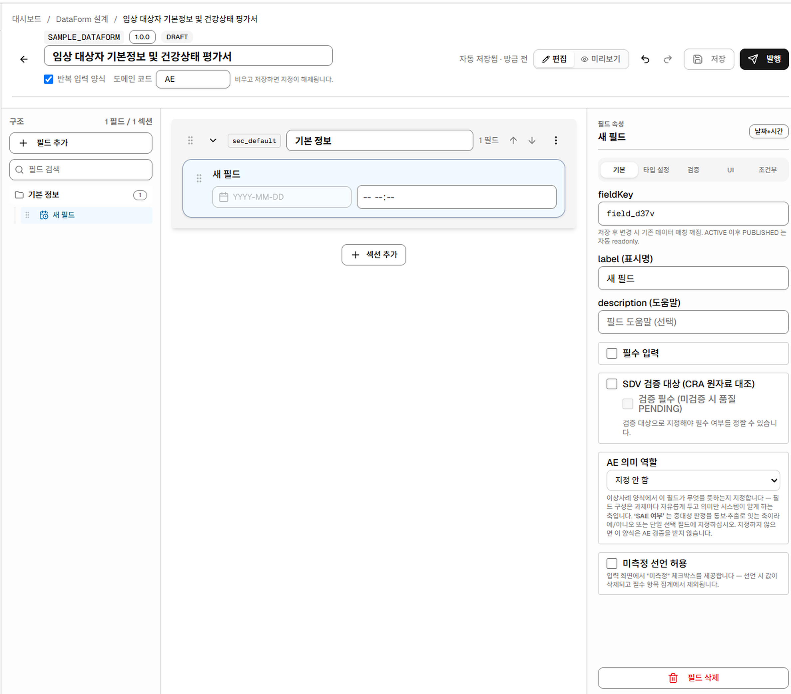
[+ 필드 추가] — 여기에서 타입을 지정하면 필드가 생성됩니다.
구조 트리에 새 필드가 추가됩니다.
WYSIWYG 캔버스의 날짜 칸 — YYYY-MM-DD 안내가 보입니다.
시간 칸 — -- --:-- 안내가 보입니다. 두 칸이 한 필드이며 값도 하나로 저장됩니다.
fieldKey — 값이 저장되는 실제 키입니다. 2.1
label (표시명) · description (도움말) — 화면에 표시되는 이름과 보조 설명입니다. 2.1
필수 입력 · SDV 검증 대상 · AE 의미 역할 · 미측정 선언 허용 — 2장에서 하나씩 설명합니다.
타입 배지 「날짜+시간」 — 선택한 필드의 타입입니다. 추가한 뒤에는 변경할 수 없습니다.
속성 탭 5종 — 기본 · 타입 설정 · 검증 · UI · 조건부. 이 매뉴얼 2~6장이 각 탭에 대응합니다.
유의사항
필수 확인 데이터 손상 · 폼 완료 불가
- • 날짜 타입에 있는 「동의일 이전 입력 금지」 가 이 타입에는 없습니다. 동의일 게이트가 필요한 항목이라면 날짜 타입으로 설계하거나, 검증 규칙4장의 값 범위로 하한을 두십시오.
- • 타입은 추가한 뒤에 변경할 수 없습니다. 잘못 선택했다면 필드를 삭제하고 다시 추가하십시오. 날짜로 할지 날짜+시간으로 할지는 시각이 분석에 쓰이는지로 판단하십시오 — 쓰지 않을 시각을 받으면 기록자의 부담만 늘어납니다.
- • 발행(PUBLISH) 이후에는 구조를 변경할 수 없습니다. 운영 중 수정이 필요하면 새 버전을 발행하십시오.
기본 탭 — 이름 · 필수 · 검증 대상 · 미측정
- 2.1fieldKey · 표시명 · 도움말
- 2.2필수 입력
- 2.3SDV 검증 대상 (CRA 원자료 대조)
- 2.4미측정 선언 허용
2.1fieldKey · 표시명 · 도움말
개요
필드의 이름을 정하는 영역입니다. 저장 키(fieldKey)와 화면에 표시되는 이름(label)은 서로 다른 값이며, 변경해도 되는 시점이 다릅니다.
화면 설명
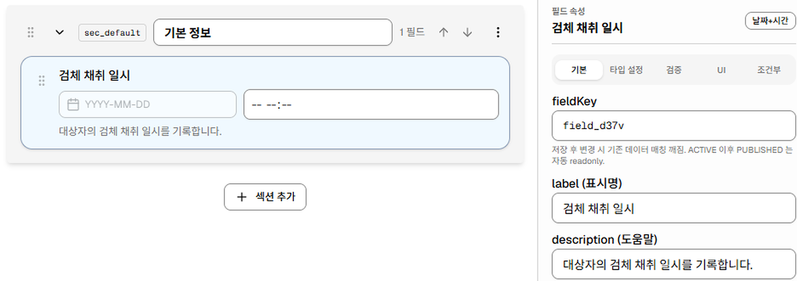
label (표시명) — 입력 화면에 표시할 항목 이름을 입력합니다.
캔버스 필드 제목으로 표시됩니다.
description (도움말) — 표시명 아래에 표시할 보조 설명을 입력합니다. 공란으로 두면 표시되지 않습니다.
두 입력 칸 아래 회색 글씨로 표시됩니다.
fieldKey — 값이 저장되는 실제 키입니다. 필드를 추가하면 field_d37v 처럼 자동으로 부여되며 영문 · 숫자 · 밑줄로 변경할 수 있습니다. 화면에는 표시되지 않습니다 — 아래 유의사항을 반드시 확인하십시오.
유의사항
필수 확인 데이터 손상 · 폼 완료 불가
- • ⛔ 저장한 뒤에는 fieldKey 를 변경하지 마십시오. 화면 안내와 같이 “저장 후 변경 시 기존 데이터 매칭 깨짐” — 이미 입력된 값이 새 키와 연결되지 않아 사실상 유실됩니다.
- • “어느 시점의 시각인지” 를 도움말에 적으십시오. 「채취 일시」 가 채취를 시작한 시각인지 끝낸 시각인지, 「투여 시각」 이 개시 시각인지 종료 시각인지에 따라 기록자마다 다른 값을 넣게 됩니다. 시각은 날짜보다 해석의 폭이 넓어 더 분명히 적어야 합니다.
- • 폼이 ACTIVE 이후 PUBLISHED 상태가 되면 fieldKey 입력란은 자동으로 읽기 전용이 됩니다. 시스템이 변경을 막아 주는 것은 그 이후이므로, 그전까지는 사용자가 직접 주의해야 합니다.
오해하기 쉬운 동작
- • 표시명은 언제든 변경해도 안전합니다. 저장 키가 아니라 화면 문구이기 때문입니다.
2.2필수 입력
개요
이 항목을 반드시 입력해야 하는지 정합니다. 선택하면 입력 화면에서 일시를 지정하지 않았을 때 저장이 차단됩니다.
화면 설명
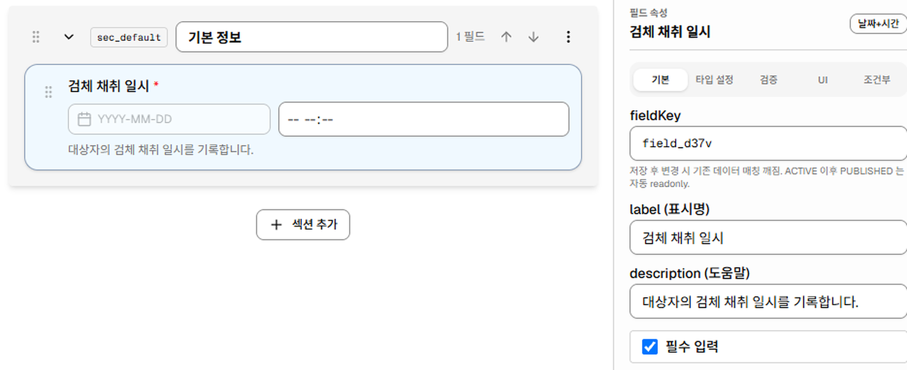
필수 입력 — 선택하면 이 필드가 필수가 됩니다.
캔버스 표시명 오른쪽에 빨간 별표(*) 가 표시되어 사용자에게 필수임을 알립니다.
유의사항
필수 확인 데이터 손상 · 폼 완료 불가
- • ⛔ 시각을 모르는 경우가 흔한 항목에는 신중하십시오. 날짜는 기억해도 몇 시였는지는 모르는 경우가 많습니다. 시각이 분석에 꼭 필요한 항목이 아니라면 날짜 타입으로 바꾸는 편이 기록 품질에 낫습니다. 꼭 필요하다면 미측정 선언2.4을 허용하십시오.
- • 두 칸 중 하나만 채우면 값이 완성되지 않습니다. 날짜만 고르고 시간을 비워 두면 일시가 확정되지 않으므로, 필수로 지정했다면 두 칸을 모두 채워야 합니다.
- • 조건부 표시로 숨겨진 필드는 필수 검증이 면제됩니다. 6장 반면 UI 탭의 숨김은 제외되지 않으므로 혼동하지 마십시오. 5.3
참고
- • 필수 여부는 폼 완료 판정에 사용됩니다.
2.3SDV 검증 대상 (CRA 원자료 대조)
개요
SDV(Source Data Verification) 는 임상연구모니터요원(CRA)이 입력값을 의료기관 원자료와 대조하는 절차입니다. 이 필드를 그 대상으로 지정할지 여기에서 정합니다. 이 설정은 모든 필드 타입에서 동일하므로 화면도 타입과 무관하게 같습니다.
화면 설명


SDV 검증 대상 (CRA 원자료 대조) — 선택하면 이 필드가 CRA 의 대조 목록에 포함됩니다.
선택 상태로 바뀌면서 하위 항목이 활성화됩니다.
검증 필수 (미검증 시 품질 PENDING) — ①을 선택한 뒤에야 지정할 수 있습니다. 선택하면 CRA 가 대조를 마치기 전까지 해당 데이터의 품질 상태가 PENDING 에 머무릅니다.
①을 선택하기 전에는 ②가 흐리게 비활성입니다. 화면 안내와 같이 “검증 대상으로 지정해야 필수 여부를 정할 수 있습니다.”
유의사항
필수 확인 데이터 손상 · 폼 완료 불가
- • 시각이 들어가는 항목은 대조할 원자료를 미리 확인하십시오. 날짜는 대부분의 기록에 남지만 시각까지 남는 원자료는 제한적입니다 (검체 라벨 · 투여 기록지 등). 원자료에 시각이 없으면 CRA 가 대조할 근거가 없습니다.
- • 값이 변경되면 검증이 해제됩니다. 시각을 몇 분만 고쳐도 품질 상태가 PENDING 으로 되돌아가고 CRA 가 다시 대조해야 합니다.
오해하기 쉬운 동작
- • SDV 는 입력한 사람이 직접 수행할 수 없습니다. 시스템이 교차 검증(Cross-User SoD)을 강제하므로 입력자와 검증자는 반드시 달라야 합니다.
참고
- • 품질 상태는 PENDING → VERIFIED → CLEAN 순으로 진행됩니다. 검증 필수로 지정한 필드가 하나라도 미검증이면 해당 데이터는 CLEAN 이 되지 못합니다.
2.4미측정 선언 허용
개요
일시를 확인할 수 없는 경우를 값으로 구분해 기록하는 기능입니다. 빈칸으로 두면 “아직 입력하지 않음” 과 “확인했으나 시각을 알 수 없음” 을 구별할 수 없습니다. 이 선언이 그 둘을 구분해 줍니다.
화면 설명

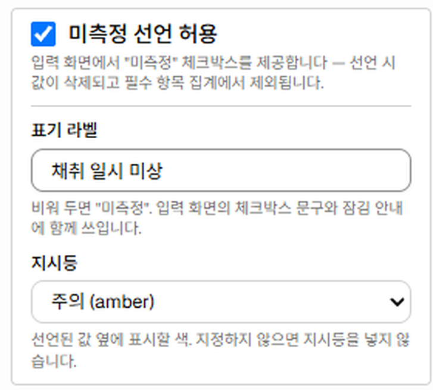
미측정 선언 허용 — 선택하면 입력 화면에 “미측정” 체크박스가 생성되고, 아래 두 항목이 표시됩니다.
표기 라벨 — 공란으로 두면 기본값 “미측정” 이 적용됩니다.
채취 일시 미상 으로 변경하면 이 문구가 입력 화면 체크박스와 잠김 안내에 함께 적용됩니다.
지시등 — 기본값은 없음 입니다.
주의(amber) 로 변경하면 선언된 값 옆에 해당 색 표시가 나타납니다.
유의사항
필수 확인 데이터 손상 · 폼 완료 불가
- • ⛔ 모르는 시각을 임의의 시각으로 채우지 마십시오. “00:00” 이나 “12:00” 으로 대신 넣으면 실제 기록과 구별되지 않아 분석에서 걸러낼 수 없습니다. 자정 기록이 비정상적으로 많아지는 자료는 대개 이 때문에 생깁니다.
- • 선언하면 값이 삭제됩니다. 화면 안내와 같이 — “선언 시 값이 삭제되고 필수 항목 집계에서 제외됩니다.”
오해하기 쉬운 동작
- • 이 타입에서 특히 자주 쓰이게 됩니다. 날짜는 아는데 시각만 모르는 경우가 많은데, 두 칸 중 하나만 채울 수는 없으므로 결국 값 전체가 비게 됩니다. 그럴 때 선언으로 남기면 “기록하지 않음” 과 구별됩니다.
참고
- • 지시등을 지정하지 않으면 색 표시가 적용되지 않습니다. 강조가 필요하면 주의(amber) 등을 선택하십시오.
타입 설정 탭 — 표기 형식과 일시 범위
- 3.1타입 설정 탭 전체 구성
- 3.2표기 형식 · 입력 가능 범위 (format · min · max)
- 3.3기본값 (defaultValue)
3.1전체 구성
개요
일시를 어떤 형식으로 표기하고 어느 구간까지 받을지 정하는 탭입니다. 날짜 타입과 항목 구성은 같지만, min · max 가 각각 두 칸(날짜 · 시간)으로 나뉘어 있습니다.
화면 설명
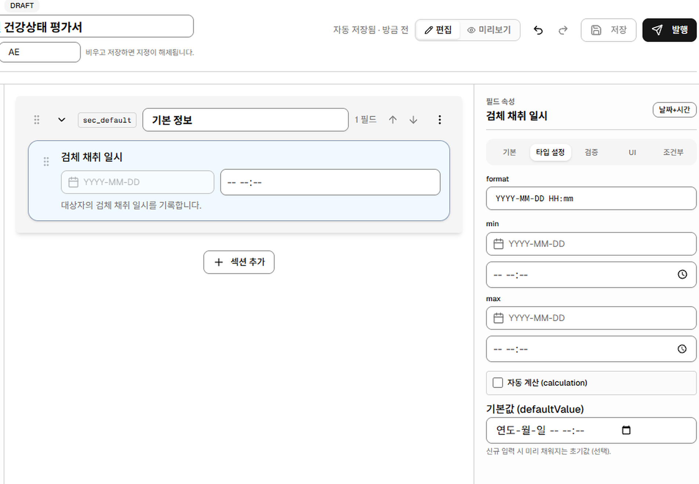
format — 일시를 화면에 표기할 형식입니다. 세 가지 중에서 고릅니다. 3.2
min — 입력 가능한 가장 이른 일시입니다. 날짜 칸과 시간 칸에 각각 지정합니다. 3.2
max — 입력 가능한 가장 늦은 일시입니다. 역시 두 칸입니다. 3.2
자동 계산 (calculation) — 항목은 표시되지만 이 타입에서는 사용하지 않습니다. 다른 필드 값으로 수치를 산출하는 기능이므로 숫자 타입에서 사용하십시오.
기본값 (defaultValue) — 신규 입력 시 미리 채워 둘 일시입니다. 3.3
유의사항
필수 확인 데이터 손상 · 폼 완료 불가
- • min · max 는 “차단” 축입니다. 구간을 벗어난 일시는 저장되지 않습니다. 다만 캔버스에는 구간이 표시되지 않으므로 사용자는 저장 단계에서야 차단 사유를 알게 됩니다 — helpText 로 미리 안내하십시오. 5.4
- • 이 화면에는 시간대(timezone) 설정이 없습니다. 여러 국가의 기관이 참여하는 시험에서 시각을 비교해야 한다면, 어느 시간대 기준으로 기록할지를 프로토콜과 SOP 에서 정하고 helpText 로 안내하십시오. 5.4
오해하기 쉬운 동작
- • 입력란에 흐리게 보이는
YYYY-MM-DD·-- --:--는 입력 예시이며 설정된 값이 아닙니다. min · max 를 공란으로 두면 구간 제한이 걸리지 않습니다.
참고
- • 이 탭의 구성은 필드를 생성할 때 선택한 타입으로 고정됩니다. 타입이 다르면 이 탭의 항목도 달라집니다.
3.2표기 형식 · 입력 가능 범위 (format · min · max)
개요
일시를 어떤 형식으로 표기할지와 어느 구간까지 받을지를 정합니다. format 은 보이는 방식이고, min · max 는 저장 가능 여부입니다.
화면 설명
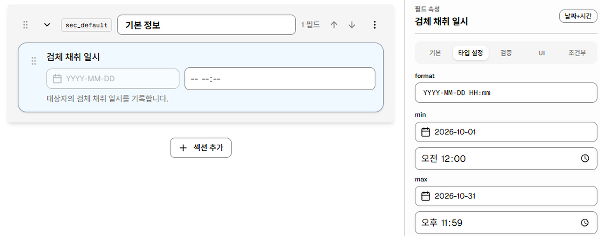
format — 일시 표기 형식입니다. 세 가지 중 하나를 선택합니다. (아래 ‘라.’ 참조) 캡처는 YYYY-MM-DD HH:mm 입니다.
min — 입력 가능한 가장 이른 일시입니다. 날짜 칸(2026-10-01)과 시간 칸(오전 12:00)을 각각 지정합니다.
max — 입력 가능한 가장 늦은 일시입니다. 캡처는 2026-10-31 오후 11:59 로 10월 마지막 순간까지 허용합니다.
유의사항
필수 확인 데이터 손상 · 폼 완료 불가
- • ⛔ 한 프로젝트 안에서 format 을 섞지 마십시오. 어떤 폼은 공백으로, 어떤 폼은
T로 구분하면 추출 자료를 한 번에 다루기 어려워집니다. 프로젝트 전체에서 하나로 통일하십시오. - • 시간 입력기는 오전/오후로 표시되는데 format 은 24시간 표기입니다. 캡처의
오후 11:59는 formatHH:mm기준으로23:59입니다. 고를 때와 보일 때의 표기가 다르므로 기록자에게 미리 알려 주십시오. - • min · max 는 캔버스에 표시되지 않습니다. 화면으로 확인할 수 없고 저장 단계에서만 차단됩니다. 3.1
- • 구간의 끝을 정할 때 시각을 빠뜨리지 마십시오. max 의 시간 칸을
오전 12:00(자정) 으로 두면 그날 하루가 통째로 빠집니다 — 캡처처럼오후 11:59로 두어야 그날까지 포함됩니다.
오해하기 쉬운 동작
- • 초(ss)가 필요한지 먼저 판단하십시오. 초까지 받으면 기록 부담이 늘고 원자료에 초가 없으면 SDV 대조도 불가능합니다. 2.3
선택할 수 있는 형식
| format | 표기 예 | 쓰는 곳 |
|---|---|---|
YYYY-MM-DD HH:mm | 2026-10-06 14:30 | 분 단위면 충분한 일반 기록 · 권장 |
YYYY-MM-DD HH:mm:ss | 2026-10-06 14:30:05 | 초까지 필요한 기록 (검체 처리 등) |
YYYY-MM-DDTHH:mm:ss | 2026-10-06T14:30:05 | ISO 8601 표기 — 외부 시스템 연계 시 |
3.3기본값 (defaultValue)
개요
새 입력을 시작할 때 미리 채워 둘 일시입니다. 이 타입은 설정 결과를 편집 화면에서 확인할 수 없어 [미리보기] 로 전환해야 합니다.
화면 설명
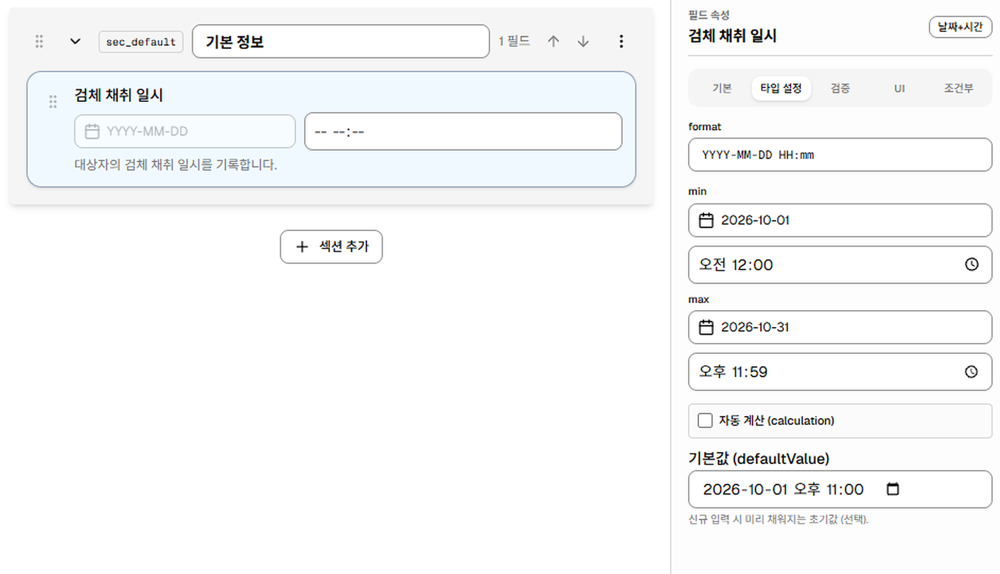
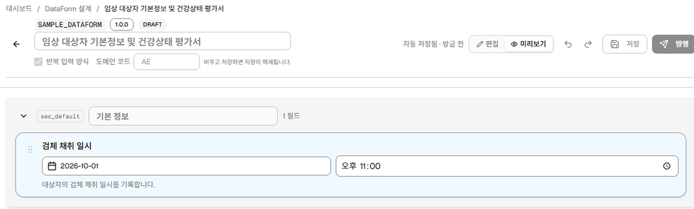
기본값 (defaultValue) — 신규 입력 시 미리 채워질 일시를 지정합니다. (선택)
편집 화면 캔버스에는 여전히 안내 문구만 보입니다. 설정이 반영되지 않은 것이 아니라 편집 화면이 기본값을 그리지 않기 때문입니다.
[미리보기] — 상단에서 미리보기로 전환합니다.
날짜 칸에 2026-10-01 이 들어가 있습니다.
시간 칸에도 오후 11:00 이 들어가 있습니다. 두 칸 모두 채워지는지 여기에서 확인하십시오.
유의사항
필수 확인 데이터 손상 · 폼 완료 불가
- • ⛔ 측정 일시 항목에는 기본값을 지정하지 마십시오. 검체 채취 시각처럼 건건이 달라야 하는 값에 기본값이 들어 있으면, 확인하지 않은 시각이 그대로 저장됩니다. 시각은 겉보기에 그럴듯해 잘못된 값을 알아채기 어렵습니다.
- • 기본값도 min · max 구간3.2을 만족해야 합니다. 구간을 벗어난 기본값은 저장 단계에서 차단됩니다.
오해하기 쉬운 동작
- • 편집 화면만 보고 설정이 안 됐다고 판단하지 마십시오. 이 타입은 기본값이 편집 화면 캔버스에 나타나지 않습니다 — 반드시 [미리보기] 로 확인하십시오.
- • 기본값은 새로 생성하는 입력에만 적용됩니다. 이미 저장된 데이터는 변경되지 않습니다.
검증 탭 — 저장 전 값 검사
- 4.1검증 규칙이 없는 상태
- 4.2규칙 추가
- 4.3규칙 작성 완료
4.1검증 규칙이 없는 상태
개요
저장하기 전에 일시가 조건에 맞는지 검사하는 규칙을 모아 두는 탭입니다. 타입 설정3장의 min · max 보다 위반 시 보여 줄 문구를 직접 정하고 싶을 때 사용합니다. 날짜 타입과 마찬가지로 값 범위 규칙만 사용합니다.
화면 설명
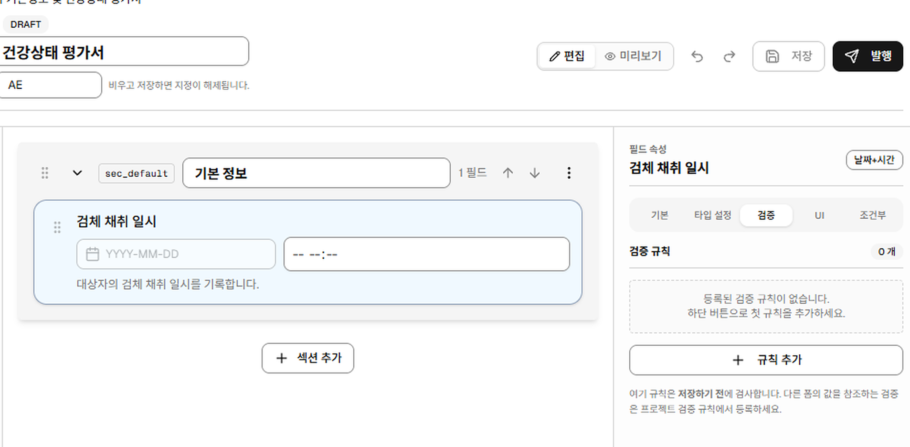
[+ 규칙 추가] — 첫 규칙을 생성합니다. 선택한 뒤의 화면은 4.2 에서 설명합니다.
검증 규칙 영역과 등록된 규칙 수입니다. 처음에는 0 개 입니다.
규칙이 없으면 “등록된 검증 규칙이 없습니다. 하단 버튼으로 첫 규칙을 추가하세요.” 안내가 표시됩니다.
하단 안내 — “여기 규칙은 저장하기 전에 검사합니다. 다른 폼의 값을 참조하는 검증은 프로젝트 검증 규칙에서 등록하세요.”
유의사항
필수 확인 데이터 손상 · 폼 완료 불가
- • ⛔ “투여 시각이 채취 시각 이후인지” 같은 일시 간 비교는 여기서 만들 수 없습니다. 다른 폼의 값을 참조하는 검증은 「프로젝트 검증 규칙」 화면에서 등록하십시오. 이 탭은 같은 폼 안에서 완결되는 검사만 다룹니다.
오해하기 쉬운 동작
- • 타입 설정의 min · max 만으로 충분한 경우가 많습니다. 같은 구간 검사를 두 곳에 중복으로 걸 필요는 없습니다. 3.2
- • 규칙은 여러 개 생성할 수 있고, 활성 상태인 규칙을 모두 만족해야 저장됩니다.
4.2규칙 추가
개요
4.1 의 [+ 규칙 추가] 를 선택하면 규칙 1 블록이 생성됩니다. 날짜+시간 필드에서 사용하는 규칙 종류는 값 범위 입니다 — min · max 칸이 날짜와 시각을 함께 받는 입력기로 나타납니다.
화면 설명
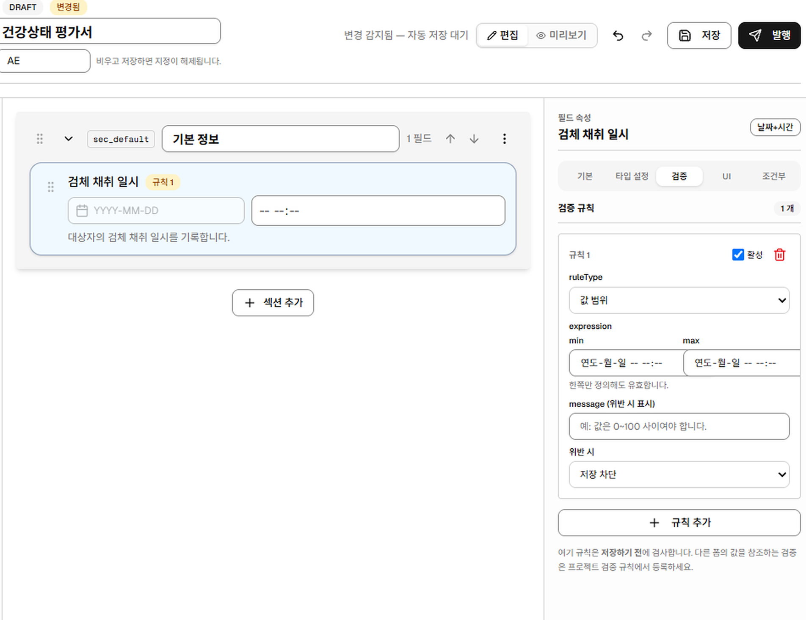
[+ 규칙 추가] — 규칙을 하나 더 생성합니다. (4.1 에서 선택한 것과 같은 버튼입니다.)
「규칙 1」 블록이 생성되고, 캔버스 표시명 옆에 「규칙 1」 배지가 표시됩니다.
규칙 수가 1 개 로 변경됩니다.
활성 체크박스와 삭제 아이콘 — 규칙을 지우지 않고 잠시 중단할 수 있습니다.
ruleType — 규칙의 종류입니다. 이 타입에서는 값 범위 를 사용합니다.
min — 구간의 시작 일시입니다. 연도-월-일 -- --:-- 형태로 입력합니다.
max — 구간의 끝 일시입니다.
흐린 글씨와 “예: 값은 0~100 사이여야 합니다.” 는 입력 예시이며 설정된 값이 아닙니다. 화면 안내와 같이 “한쪽만 정의해도 유효합니다.”
message (위반 시 표시) — 규칙을 위반했을 때 사용자에게 표시할 문구입니다.
위반 시 — 저장 차단 또는 경고 중에서 선택합니다.
유의사항
필수 확인 데이터 손상 · 폼 완료 불가
- • message 를 공란으로 두면 사용자는 차단된 이유를 알 수 없습니다. 반드시 입력하십시오.
- • 타입 설정의 구간 제한3.2과 함께 적용되므로, 서로 어긋나게 지정하면 어떤 일시도 저장할 수 없습니다.
오해하기 쉬운 동작
- • message 의 예시 문구가 숫자용으로 표시됩니다. 예시일 뿐이므로 일시에 맞는 문구로 직접 입력하십시오. 4.3
- • 있을 수 없는 일시는 저장 차단, 드물지만 가능한 일시는 경고로 나누는 것이 실무 기준입니다.
4.3규칙 작성 완료
개요
4.2 의 빈 항목을 끝까지 입력한 상태입니다. 이 설정이면 2026년 10월을 벗어난 일시를 지정하면 저장이 차단되고 지정한 문구가 표시됩니다.
화면 설명
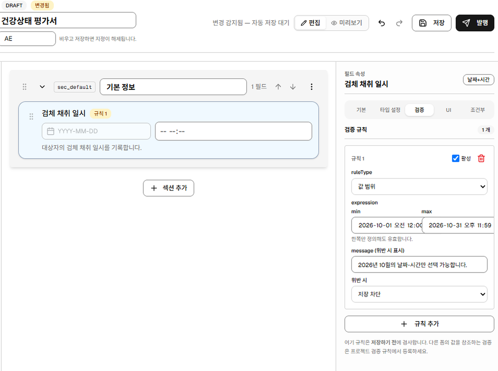
ruleType = 값 범위 — 일시의 앞뒤 경계를 검사하는 규칙입니다.
min = 2026-10-01 오전 12:00 — 구간의 시작 일시입니다. 자정부터 허용합니다.
max = 2026-10-31 오후 11:59 — 구간의 끝 일시입니다. 그날 마지막 1분까지 허용합니다.
화면 안내 — “한쪽만 정의해도 유효합니다.” 한쪽만 지정해도 규칙은 정상 동작합니다.
message = 2026년 10월의 날짜-시간만 선택 가능합니다. — 허용 구간을 그대로 적어 사용자가 무엇을 고쳐야 하는지 알 수 있게 했습니다.
위반 시 = 저장 차단 — 조건을 만족할 때까지 저장되지 않습니다.
유의사항
필수 확인 데이터 손상 · 폼 완료 불가
- • 구간의 양 끝에서 시각을 정확히 지정하십시오. 캡처처럼 시작은 오전 12:00(자정), 끝은 오후 11:59 로 두어야 그 기간이 온전히 들어갑니다. 끝을 자정으로 두면 마지막 날이 통째로 빠집니다. 3.2
- • message 에 허용 구간을 그대로 적으십시오. 일시는 구간이 화면에 표시되지 않으므로 이 문구가 유일한 안내입니다. 3.2
오해하기 쉬운 동작
- • 값이 길어 입력란에 다 보이지 않을 수 있습니다. 날짜와 시각이 한 칸에 들어가기 때문입니다 — 캡처의 max 칸도 끝이 잘려 보입니다. 저장 전에 칸을 클릭해 전체 값을 확인하십시오.
- • 타입 설정3장과 검증 규칙4장은 모두 함께 적용됩니다. 둘 중 하나라도 어긋나면 저장되지 않습니다.
UI 탭 — 화면 배치와 안내 문구
- 5.1UI 탭 전체 구성
- 5.2레이아웃 너비
- 5.3읽기 전용 · 숨김
- 5.4placeholder · helpText
5.1전체 구성
개요
값 자체가 아니라 화면에 어떻게 배치하고 어떻게 안내할지를 정하는 탭입니다. 이 탭의 설정은 저장되는 데이터 자체를 변경하지 않습니다. 다만 숨김은 화면에서만 감추고 필수 집계에서는 제외되지 않으므로 사용 전에 5.3 을 확인하십시오.
화면 설명
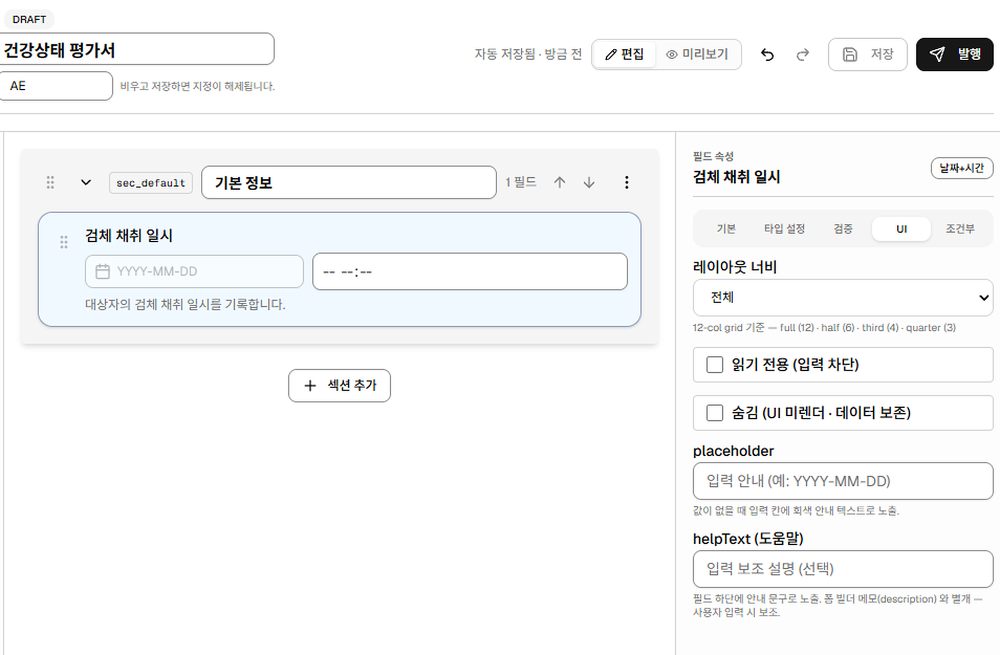
레이아웃 너비 — 한 줄에서 이 필드가 차지할 폭입니다. 선택지의 의미는 바로 아래 안내 “12-col grid 기준 — full (12) · half (6) · third (4) · quarter (3)” 에 적혀 있습니다. 5.2
읽기 전용 (입력 차단) — 표시하되 수정하지 못하게 합니다. 5.3
숨김 (UI 미렌더 · 데이터 보존) — 화면에서 감춥니다. 5.3
placeholder — 값이 없을 때 입력란 안에 표시되는 회색 안내입니다. 5.4
helpText (도움말) — 필드 아래에 표시되는 안내 문구입니다. 5.4
유의사항
필수 확인 데이터 손상 · 폼 완료 불가
- • ⛔ 이 타입은 폭을 줄이면 칸이 잘립니다. 입력란이 두 개라 좁은 폭에서는 날짜 칸이
YY…처럼 잘려 읽을 수 없게 됩니다. 전체 를 권장합니다. 5.2 - • 제한이 모두 화면에 보이지 않습니다. 구간 제한3.2 · 검증 규칙4장 · 시간대 기준이 저장할 때만 작동하거나 아예 설정이 없으므로, helpText 로 미리 알려 주지 않으면 사용자는 영문도 모른 채 차단됩니다. 5.4
오해하기 쉬운 동작
- • 입력란에 흐리게 보이는
입력 안내 (예: YYYY-MM-DD)·입력 보조 설명 (선택)은 입력 예시이며 설정된 값이 아닙니다.
참고
- • 기본값은 레이아웃 너비 = 전체, 읽기 전용 · 숨김은 해제 상태입니다.
5.2레이아웃 너비
개요
한 줄을 12칸으로 나눈 12-column grid 위에서 이 필드가 차지할 폭을 선택합니다. 이 타입은 폭 축소에 가장 취약합니다 — 한 필드 안에 입력란이 두 개 들어가기 때문입니다.
화면 설명
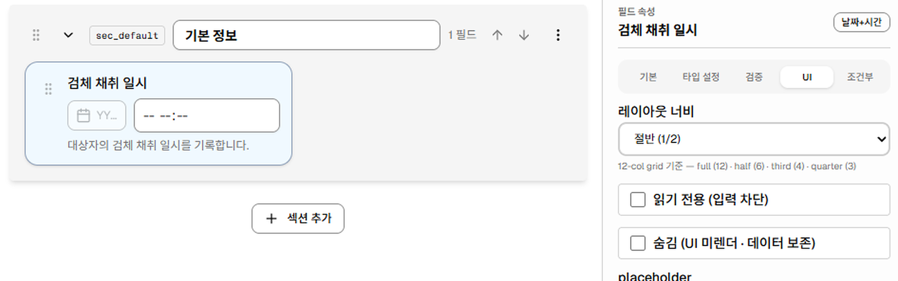
YY… 로 잘린다레이아웃 너비 — 선택 목록에서 폭을 지정합니다. 예시는 절반 (1/2) 입니다.
두 칸이 함께 줄어들면서 날짜 칸의 안내 문구가 YY… 로 잘립니다. 사용자는 어떤 형식으로 입력해야 하는지 알 수 없게 됩니다.
유의사항
필수 확인 데이터 손상 · 폼 완료 불가
- • ⛔ 날짜+시간 필드는 전체 폭을 사용하십시오. 캡처가 보여 주듯 절반만 되어도 안내 문구가 잘립니다. 날짜 타입은 한 칸이라 절반 폭도 괜찮지만, 이 타입은 같은 폭에 두 칸을 넣어야 해 사정이 다릅니다.
오해하기 쉬운 동작
- • 폭을 줄여야 한다면 placeholder 를 짧게 쓰십시오. 다만 근본 해결은 아니며, 안내는 helpText 에 적는 편이 안전합니다. 5.4
- • 폭을 줄이면 다음 필드가 같은 줄에 배치됩니다. 한 줄의 합이 12를 초과하면 다음 줄로 넘어갑니다.
참고
- • 화면 폭이 좁은 기기에서는 설정과 무관하게 한 줄에 하나씩 세로로 배치될 수 있습니다.
너비 선택지
| 선택 | 차지하는 칸 | 날짜+시간에서 |
|---|---|---|
| 전체 | 12 | 두 칸이 모두 온전히 보임 — 권장 |
| 절반 (1/2) | 6 | 날짜 칸 안내가 잘림 (캡처) |
| 삼분 (1/3) | 4 | 두 칸 모두 알아보기 어려움 |
| 사분 (1/4) | 3 | 사실상 사용 불가 |
5.3읽기 전용 · 숨김
개요
필드를 수정하지 못하게 하거나 표시되지 않게 합니다. 둘 다 저장된 일시는 그대로 보존됩니다.
화면 설명
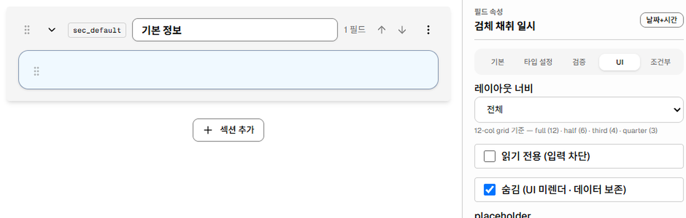
읽기 전용 (입력 차단) — 일시는 보이지만 사용자가 바꿀 수 없습니다. (이 캡처에서는 해제 상태)
숨김 (UI 미렌더 · 데이터 보존) — 입력 화면에 표시하지 않습니다. 이미 저장된 값은 삭제되지 않습니다.
캔버스에서 필드가 사라져 섹션이 비어 보입니다. 두 칸이 함께 사라집니다.
유의사항
필수 확인 데이터 손상 · 폼 완료 불가
- • ⛔ 필수 항목을 숨기지 마십시오. UI 탭의 숨김은 화면에서만 감추고 필수 집계에서는 제외되지 않습니다 — 사용자가 입력할 수 없는 항목이 분모에 남아 폼을 완료할 수 없게 됩니다.
- • 숨김은 데이터를 삭제하지 않습니다. 화면에서만 사라지므로, 값을 삭제하려면 필드를 삭제해야 합니다.
오해하기 쉬운 동작
- • 조건부 탭의 숨김과 다릅니다. 조건이 맞지 않아 숨겨진 필드는 필수 집계에서 제외됩니다6장. 같은 “숨김” 이라는 표현을 사용하지만 검증에서의 처리가 정반대이므로 구분하십시오.
- • 읽기 전용과 숨김은 다릅니다. 읽기 전용은 “보여 주되 수정 불가”, 숨김은 “보여 주지 않음” 입니다. 시스템이 기록한 일시를 확인시켜야 한다면 읽기 전용을 사용하십시오.
참고
- • 숨겨도 구조 패널에는 그대로 남아 있습니다 — 다시 선택해 설정을 되돌릴 수 있습니다.
5.4placeholder · helpText
개요
사용자에게 어떤 일시를 지정해야 하는지 알려 주는 두 가지 문구입니다. 이 타입에서는 helpText 가 사실상 유일한 안내 수단입니다 — 구간 제한도, 시간대 기준도 화면에 나타나지 않기 때문입니다.
화면 설명
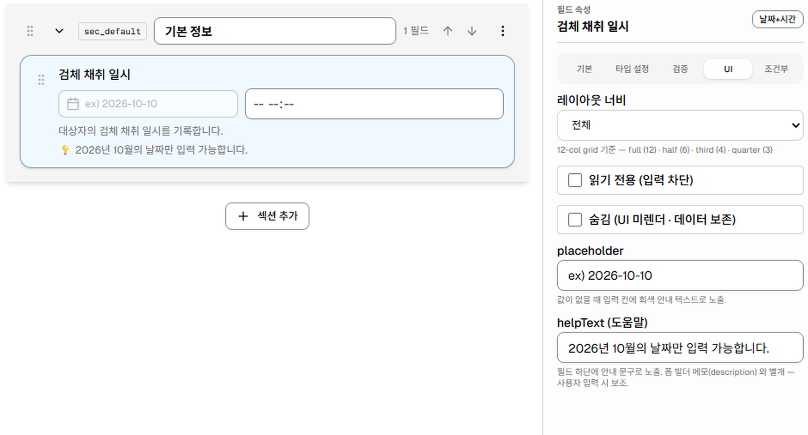
placeholder — 입력란 안에 표시할 안내 문구를 입력합니다. 캡처는 ex) 2026-10-10 입니다.
날짜 칸 안에 회색으로 표시됩니다. 사용자가 날짜를 고르면 사라집니다.
⚠ 시간 칸은 바뀌지 않습니다. placeholder 는 날짜 칸에만 적용되고 시간 칸은 -- --:-- 안내를 그대로 유지합니다.
helpText (도움말) — 필드 아래에 표시할 안내 문구를 입력합니다. 캡처는 2026년 10월의 날짜만 입력 가능합니다 로 허용 구간을 알려 줍니다.
필드 아래에 전구 아이콘(💡)과 함께 표시됩니다. 일시를 지정해도 사라지지 않습니다.
유의사항
필수 확인 데이터 손상 · 폼 완료 불가
- • ⛔ 안내는 helpText 에 적으십시오. placeholder 는 시간 칸에 적용되지 않고 값을 고르면 사라지며, 폭을 줄이면 잘립니다5.2. 세 가지 약점이 겹쳐 날짜+시간에서는 안내 수단으로 쓸 수 없습니다.
- • helpText 에 적어야 할 것 — ① 허용 구간3.2 ② 시간대 기준(화면에 설정이 없음 · 3.1) ③ 오전/오후로 고르지만 표기는 24시간이라는 점3.2 ④ 분 단위인지 초 단위인지.
오해하기 쉬운 동작
- • description 과 helpText 는 서로 다른 항목입니다. 화면 안내와 같이 — helpText 는 “폼 빌더 메모(description)와 별개 — 사용자 입력 시 보조” 입니다. 둘 다 입력하면 두 줄이 함께 표시됩니다.
조건부 탭 — 다른 값에 따라 표시하기
- 6.1조건부 표시 활성
- 6.2조건 설정
6.1조건부 표시 활성
개요
다른 필드의 값에 따라 이 필드를 표시하거나 감추는 기능입니다. 「검체 여부 = 예」일 때만 채취 일시를 묻는 식의 분기에 사용합니다 — 해당하지 않는 피험자에게 채울 수 없는 두 칸을 보여 주지 않습니다.
화면 설명
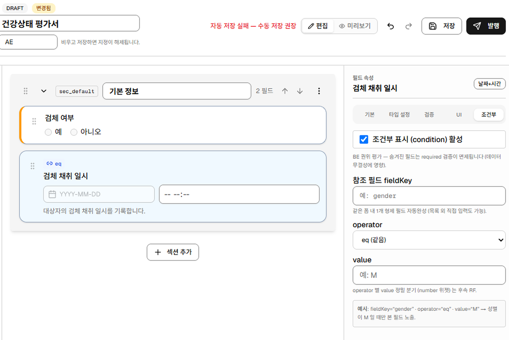
조건부 표시 (condition) 활성 — 선택하면 아래 조건 설정이 표시됩니다.
캔버스 필드 위에 🔗 eq 배지가 표시되어 조건이 적용되었음을 알립니다.
⚠ 화면 안내 — “숨겨진 필드는 required 검증이 면제됩니다 (데이터 무결성에 영향).” 조건 판정은 시스템이 수행합니다.
참조 필드 fieldKey — 조건의 기준이 되는 같은 폼 안의 다른 필드입니다. 같은 폼의 형제 필드가 자동완성되며, 목록에 없는 값은 직접 입력할 수도 있습니다.
operator — 비교 방법입니다. 기본값은 eq (같음) 입니다.
value — 비교할 값입니다.
하단 예시 — fieldKey="gender" · operator="eq" · value="M" → 성별이 M 일 때만 본 필드 노출.
유의사항
필수 확인 데이터 손상 · 폼 완료 불가
- • 조건을 설정하면 필수 검증이 면제될 수 있습니다. 조건이 맞지 않아 숨겨진 동안에는 그 필드가 필수여도 비어 있는 상태로 폼이 완료됩니다. 이는 결함이 아니라 의도된 동작입니다.
오해하기 쉬운 동작
- • “실시한 경우에만 일시를 묻는” 전형적인 용법입니다. 시행하지 않은 피험자에게 두 칸을 비워 두게 하거나 임의의 시각을 넣게 하는 일을 막을 수 있습니다. 2.2 · 2.4
- • 캡처 상단의 “자동 저장 실패 — 수동 저장 권장” 은 자동 저장이 일시적으로 실패했을 때 표시되는 안내입니다. 이때는 [저장] 을 눌러 직접 저장하십시오.
참고
- • 조건을 활성화하고 참조 필드를 공란으로 두면 조건이 성립하지 않습니다. 반드시 ②~④를 모두 입력하십시오. 6.2
6.2조건 설정
개요
6.1 에서 활성화한 조건을 끝까지 입력한 상태입니다. 이 설정이면 「검체 여부」 필드의 값이 1(예) 일 때만 이 날짜+시간 필드가 입력 화면에 표시됩니다.
화면 설명
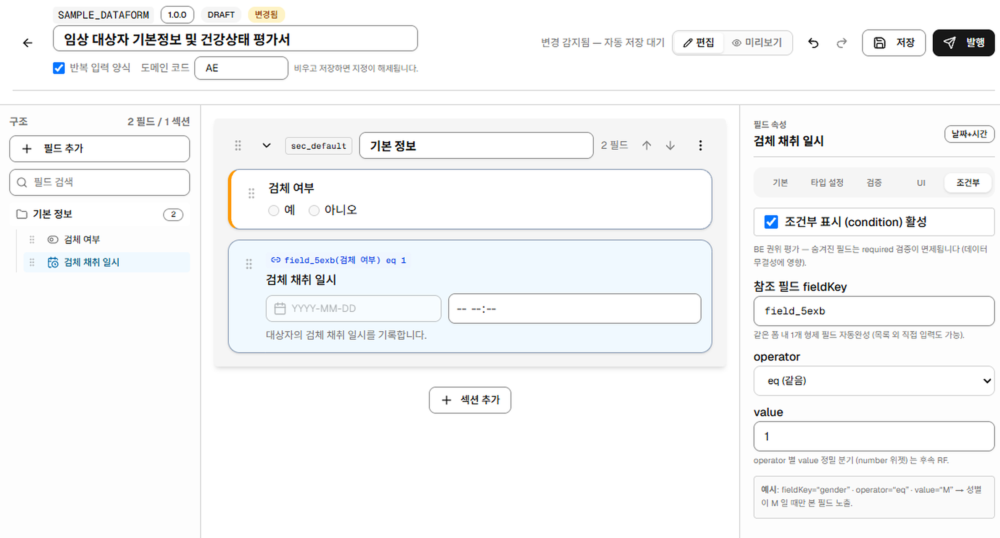
검체 여부 가 1 일 때만 표시되도록 설정한 상태참조 필드 fieldKey = field_5exb — 같은 폼의 「검체 여부」 필드를 가리킵니다.
operator = eq (같음)
value = 1 — 화면에 보이는 “예” 가 아니라 그 선택지에 저장되는 값을 입력합니다.
①~③을 모두 입력한 결과 — 캔버스 배지가 🔗 field_5exb(검체 여부) eq 1 로 구체화됩니다.
참조 대상인 「검체 여부」 필드가 같은 폼 안에 있어야 하며, 구조 트리에서 확인할 수 있습니다.
하단 예시 — fieldKey="gender" · operator="eq" · value="M" → 성별이 M 일 때만 본 필드 노출.
유의사항
필수 확인 데이터 손상 · 폼 완료 불가
- • ⛔ value 에는 화면 문구가 아니라 저장값을 입력합니다. 캡처에서 참조 필드는 예 / 아니오 로 보이지만 실제 저장값은
1입니다. “예” 라고 입력하면 조건이 영원히 성립하지 않아 이 필드는 끝까지 표시되지 않습니다. - • 일시 필드를 조건의 기준으로 삼는 것은 권하지 않습니다.
eq는 분 단위까지 정확히 같을 때만 성립하므로 사실상 맞아떨어지지 않습니다. 기준으로 쓰려면 “실시 여부” 같은 선택 필드를 따로 두십시오. - • 참조 필드의 fieldKey 를 변경하거나 삭제하면 조건이 깨집니다. 조건은 표시명이 아니라 fieldKey 로 연결됩니다. 2.1
참고
- • 조건을 사용하면 폼이 짧아지고 불필요한 입력이 줄어듭니다. 다만 조건이 서로 충돌하면 끝까지 표시되지 않는 필드가 생기므로, 설정 후 미리보기로 반드시 확인하십시오.
부록
- 7.1설정 항목 한눈에 보기
7.1날짜+시간 필드 설정 항목 한눈에 보기
탭별 설정 항목
| 탭 | 항목 | 무엇을 정하는가 | 본문 |
|---|---|---|---|
| 기본 | fieldKey | 값이 저장되는 실제 키 (저장 후 변경 금지) | 2.1 |
| label (표시명) | 화면에 표시되는 항목 이름 | 2.1 | |
| description (도움말) | 표시명 아래 보조 설명 — 어느 시점의 시각인지 | 2.1 | |
| 필수 입력 | 반드시 입력해야 하는지 (두 칸 모두 채워야 함) | 2.2 | |
| SDV 검증 대상 | CRA 원자료 대조 대상인지 · 검증 필수 여부 | 2.3 | |
| AE 의미 역할 | 이상사례 양식에서 이 필드가 의미하는 바 | ※ | |
| 미측정 선언 허용 | “일시 미상” 을 값으로 남길 수 있는지 · 표기 라벨 · 지시등 | 2.4 | |
| 타입 설정 | format | 표기 형식 3종 — HH:mm / HH:mm:ss / ISO(T) | 3.2 |
| min · max | 입력 가능한 일시 구간 — 각각 날짜 칸 + 시간 칸 | 3.2 | |
| 기본값 (defaultValue) | 미리 채워 둘 일시 — 미리보기에서만 확인됨 | 3.3 | |
| 자동 계산 | 이 타입에서는 사용하지 않음 | 3.1 | |
| 검증 | ruleType | 규칙 종류 — 값 범위 만 사용 | 4.2 |
| expression (min · max) | 시작 · 끝 일시 (한쪽만 지정 가능) | 4.3 | |
| message | 위반 시 표시할 문구 — 허용 구간을 그대로 | 4.3 | |
| 위반 시 · 활성 | 저장 차단 / 경고 · 규칙 활성 · 비활성 | 4.2 | |
| UI | 레이아웃 너비 | 12-col grid 상의 폭 — 전체 권장(두 칸이라 잘림) | 5.2 |
| 읽기 전용 | 보여 주되 수정하지 못하게 | 5.3 | |
| 숨김 | 화면 미표시 (저장값 보존 · 필수 집계에는 유지) | 5.3 | |
| placeholder · helpText | placeholder 는 날짜 칸에만 적용 — 안내는 helpText 에 | 5.4 | |
| 조건부 | 조건 활성 | 조건부 표시 사용 여부 (필수 검증 면제) | 6.1 |
| 참조 필드 fieldKey | 조건의 기준이 되는 같은 폼의 필드 | 6.2 | |
| operator · value | 비교 방법과 비교할 값 (저장값을 입력) | 6.2 |
반드시 기억할 것
필수 확인 데이터 손상 · 폼 완료 불가
- • 레이아웃 너비는 전체를 사용하십시오. 한 필드에 입력란이 두 개라 절반만 되어도 날짜 칸 안내가
YY…로 잘립니다. 5.2 - • 구간의 끝에서 시각을 빠뜨리지 마십시오. max 를 자정으로 두면 마지막 날이 통째로 빠집니다 —
오후 11:59로 두십시오. 3.2 · 4.3 - • 모르는 시각을 00:00 이나 12:00 으로 채우지 마십시오. 실제 기록과 구별되지 않습니다 — 미측정 선언을 사용하십시오. 2.4
- • 안내는 helpText 에 적으십시오. placeholder 는 시간 칸에 적용되지 않고 폭을 줄이면 잘립니다. 5.4
- • 측정 일시에 기본값을 두지 마십시오. 확인하지 않은 시각이 그럴듯한 모습으로 저장됩니다. 3.3
오해하기 쉬운 동작
- • 시간 입력기는 오전/오후인데 format 은 24시간 표기입니다.
오후 11:59=23:59. 3.2 - • 기본값은 편집 화면에 나타나지 않습니다. [미리보기] 에서만 확인됩니다. 3.3
- • 시간대 설정이 없습니다. 다국가 시험이면 기준 시간대를 프로토콜에서 정하고 helpText 로 안내하십시오. 3.1 · 5.4
이 문서에서 다루지 않은 것
※ AE 의미 역할 — 기본 탭에 있으나 설정 과정 캡처가 없어 별도 절을 두지 않았습니다. 이상사례(AE) 양식을 사용하는 프로젝트에서만 지정하며, 자세한 사용법은 AE 관련 문서를 참조하십시오.
동의일 이전 입력 금지 — 이 타입에는 항목 자체가 없습니다. 날짜(DATE) 타입 전용이므로, 동의일 게이트가 필요한 항목은 날짜 타입으로 설계하거나 검증 규칙의 값 범위로 하한을 두십시오. 1.1
자동 계산 (calculation) — 타입 설정 탭에 항목이 표시되지만 이 타입에서는 사용하지 않습니다. 다른 필드 값으로 수치를 산출하는 기능이므로 숫자 타입에서 사용하십시오. 3.1
값 범위 외의 검증 규칙 종류 — 이 타입에서 사용하는 것은 값 범위 하나입니다. 다른 일시와 비교하는 검증(예: 투여 시각이 채취 시각 이후인지)은 「프로젝트 검증 규칙」 화면에서 등록합니다. 4.1